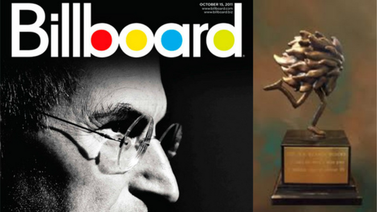
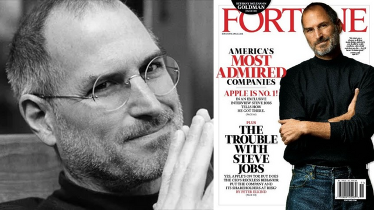
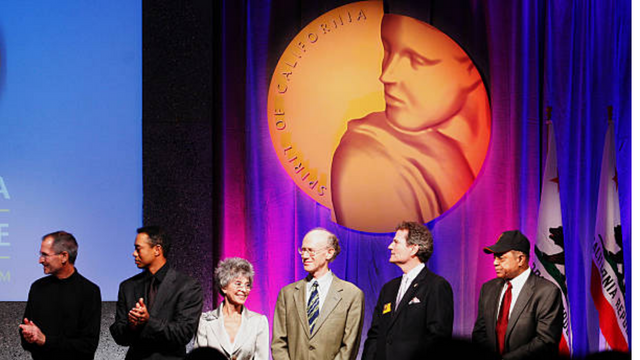
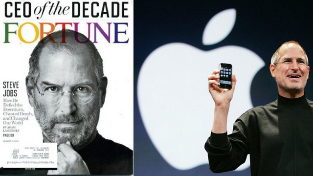
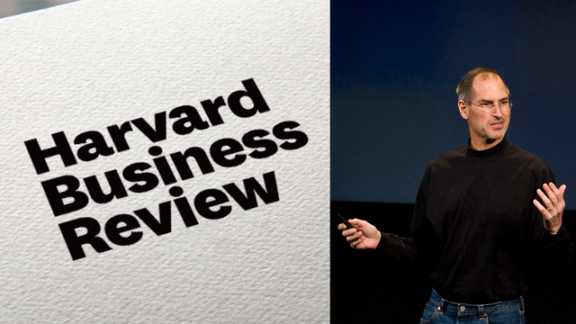
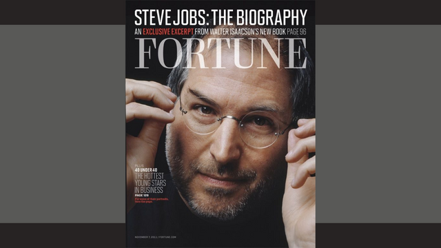
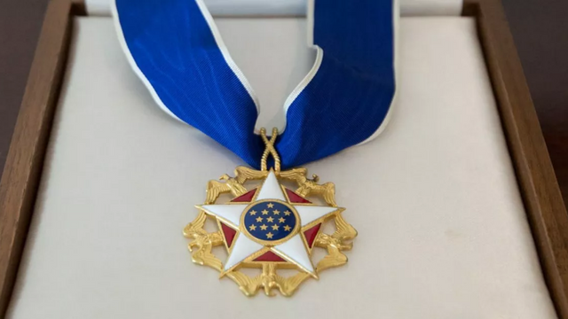

Fue condecorado por el presidente estadunidense Ronald Reagan,
dicha medalla representa un honor que es concedico exclusivamente a
inventores e innovadores que han hecho importantes contribuciones
al desarrollo de nuevos e importantes tecnologías.
Premio al Visionario
2004

Premio al Visionario
Steve fue seleccionado como el Visionario del Año por la revista estadounidence Billboard, dedicada principalmente
a la industria musical y entretenimiento digital, asimismo, Apple fue reconocida como Marca del Año.
2007
La persona más poderosa

La persona más poderosa
El 27 de noviembre de 2007 fue nombrado la persona más poderosa del mundo de los negocios por la revista Fortune.
Salón de la Fama de California
2007

Salón de la Fama de California
El 5 de diciembre de 2007 el entonces gobernador de California, Arnold Schwarzenegger,
le incluyó en el Salón de la Fama de California, en el Museo de California de Historia,
la Mujer y las Artes.
2009
Empresario de la Década

Empresario de la Década
En octubre de 2009 fue elegido "Empresario de la Década" por la revista Fortune.
Director ejecutivo del año
2009

Director ejecutivo del año
En diciembre de 2009 fue elegido director ejecutivo del año por la revista Harvard Business Review por
«incrementar en 150 000 millones el valor en bolsa de Apple en los últimos 12 años.
2012
Emprendedor de la historia moderna

Emprendedor de la historia moderna
En marzo de 2012 fue elegido por la revista Fortune como el mejor emprendedor de la historia moderna, seguido por Bill Gates
Medalla Presidencial de la Libertad
2022

Medalla Presidencial de la Libertad
El 7 de julio de 2022, recibió la condecoración póstuma de la Medalla Presidencial de la Libertad de manos del Presidente
de los Estados Unidos Joe Biden por su contribución hacia el fortalecimiento de la educación con base en la tecnología y
la transformación del mundo en torno a la igualdad.